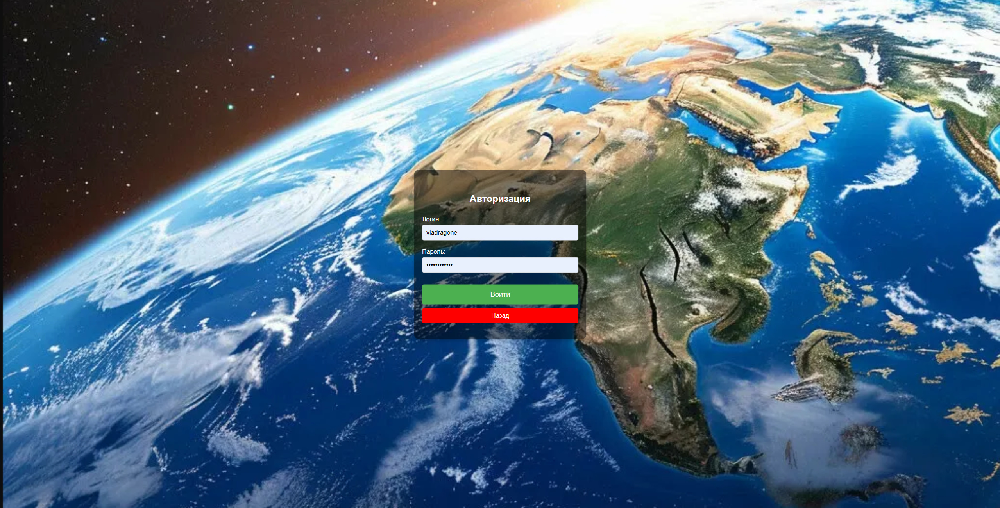
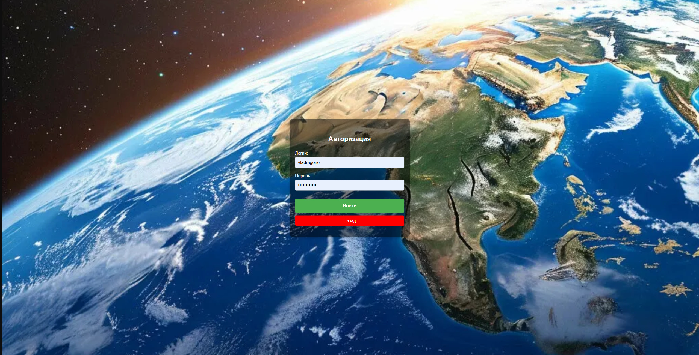

FindMe
1. Цель работы
Создать интерактивное web-приложение, позволяющее пользователям угадывать географическое местоположение на основе панорамных изображений.
2. Функциональные требования
Главная страница
- Играть — переход к настройкам игры
- Войти — переход на страницу авторизации
- Зарегистрироваться — переход на страницу регистрации
- FAQ — переход к часто задаваемым вопросам
FAQ
- Система должна отображать список часто задаваемых вопросов для пользователей
- Система должна предоставлять администратору возможность добавлять новые вопросы
Авторизация и регистрация
- Вход по логину и паролю
- Регистрация нового пользователя
- Выход из системы
Профиль
- Отображение статистики игрока
- Доступ к кнопкам: Рейтинг, Играть, Выйти
Рейтинг
- Отображение топ-3 игроков
- Доступ к кнопкам: Профиль, Играть, Выйти
Игра
- Выбор локации
- Генерация карты и мини-карты
- Фиксация выбора игрока и расчёт очков
- Показ итогов раунда
- Администратор может добавлять новые локации
Результаты игры
- Отображение результатов
- Возможность оставить отзыв
3. Use-case диаграмма
4. BPMN-диаграмма бизнес-процессов

5. Пользовательские сценарии
Сценарий участия в игре
- Авторизоваться на сайте
- Нажать на кнопку «Начать игру»
- Выбрать интересующую локацию
- Угадать локацию на мини-карте
- Посмотреть результат и получить очки
Сценарий просмотра личной статистики
- Авторизоваться на сайте
- Нажать на кнопку «Профиль»
Сценарий добавления локации (для администрации)
- Авторизоваться на сайте
- Нажать на кнопку «Начать игру»
- Указать название и координаты новой локации
- Нажать «Добавить точку»
6. ER-диаграмма сущностей
7. Технологический стек
- Backend: Java, Spring Boot
- Frontend: Angular + CSS
- База данных: PostgreSQL
- Доставка: локальный запуск
8. Диаграмма БД
9. Компонентная диаграмма системы

10. Экраны web-приложения (черновые эскизы)
 
